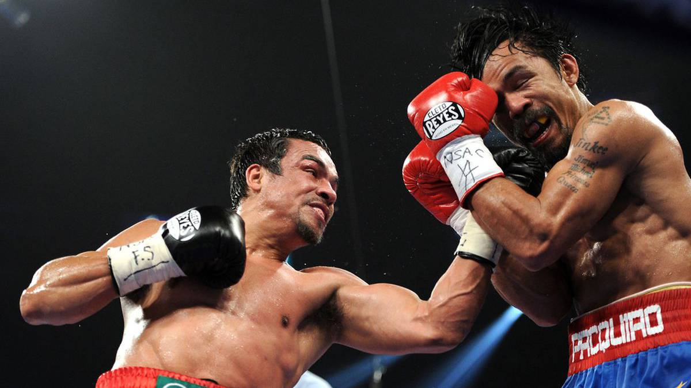

|  | BOXEO PARA TODOS |
MEXICANOS |
ESTADOUNIDENSES |
PUERTORRIQUEÑOS |
| ¿QUE ES? “ El boxeo es un deporte donde dos personas se enfrentan a golpes de puño con sus manos cubiertas por guantes y de acuerdo a determinadas reglas. El ganador es aquel que logra derribar a su rival sin que este pueda levantarse antes de una cuenta de diez o que, al término del combate, suma más puntos que el oponente según la opinión de un jurado.” |
REGLAS Los boxeadores, deben usar obligatoriamente: Pantalón corto con la cintura de color distinto (porque está prohibido dar golpes por debajo de ésta) Coquilla Protector bucal Guantes que cumplan las caracteristicas especificadas en el reglamento (ver boxeo amateur y profesional) Las mujeres deberán llevar protector de pecho. |
| HISTORIA El boxeo se ha practicado desde la Antigüedad en todos los continentes con excepción de América. Luchar con los puños como competición y espectáculo es una de las actividades deportivas más antiguas del mundo. De origen africano se remonta al año 6000 a. C., en la zona de la actual Etiopía, de donde se difundió primero a la antigua civilización egipcia, y a las civilizaciones mesopotámicas luego, donde se encuentran bajorrelieves de boxeadores que datan del año 5500 a. C. De Egipto pasó a la civilización minoica desarrollada en Creta, mientras que de la Mesopotamia se expandió a la India. |
CATEGORÍAS EN EL BOXEO Peso Paja 47,627 kg Peso Minimosca 48,988 kg Peso mosca 50,802 kg Peso Supermosca 52,163 kg Peso gallo 53,524 kg Peso supergallo 55,338 kg Peso pluma 57,153 kg Peso superpluma 58,967 kg Peso ligerp 61,235 kg Peso superliger 63,503 kg Peso welter 66,678 kg Peso superwelter 69,853 kg Peso medio 72,575 kg Peso supermedio 76,204 kg Peso semipesado 79,389 kg Peso crucero 86,183 kg Peso pesado +86,183 kg |